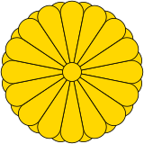

 菊紋
大家都知道日本天皇以菊花作為紋章。不過精確來說，天皇的菊之御紋是「十六葉八重表菊」，皇族各宮家的家徽也都以此為基礎。 菊紋做為天皇御紋起始自鎌倉時代的後鳥羽天皇。這位喜愛菊花，而且熱衷於刀劍的天皇，甚至會自己親手鍛刀，並在刀上刻下菊紋，於是後代的天皇皆延用「十六葉八重表菊」，成為皇室的象徵。 如今除了皇室之外，也在慣例上做為國徽，用於日本駐外使館。而日本護照上的菊紋則只有一重，略有差異。
桐紋
神話中的鳳凰只會棲息在梧桐樹上，因此被視為神聖的植物，在平安時代就作為天皇服裝上的紋樣。 一般認為正式成為皇室紋章是在鎌倉末期。在歷史上天皇也經常將桐紋下賜給寺社、武家及政權代行者，最為人所熟知的桐紋使用者就是豐臣秀吉。 到了現代，桐紋也是日本內閣總理大臣的紋章。在桐紋之中以中央七蕊、兩側五蕊的「五七桐紋」最為尊貴。有些獲賜者為了表示謙敬會改為「五三桐」使用。